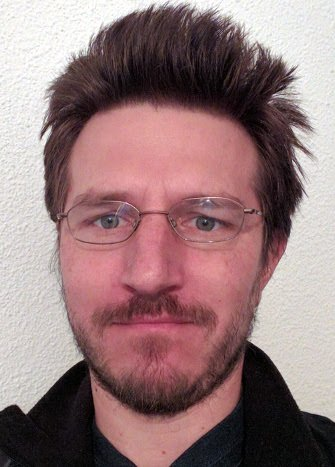

2013 – Present
Associate Professor
Faculty of Mathematics and Computer Science
University of Bucharest

Associate Professor
An introductory course on requirement analysis and modelling for software systems.
Previous iteration: 2025
An introductory course on (functional) declarative programming concepts and implementations.
A hands-on review of concurrency constructs and approaches in various programming languages (Java, C++, Erlang/Elixir, Javascript, Python).
An introductory course on (operational) semantics of programming languages. Concepts covered: designing interpreters; defining type systems; proving program equivalence and type safety.
A more hands-on version of the course above (using Haskell and Prolog). Including an introduction to logic programming.
A hands-on introduction to machine learning techniques using kaggle.com.
2013 – Present
Faculty of Mathematics and Computer Science
University of Bucharest
2026 – Present
Prototyping AI + Lean-based provers for various programming languages
2024 – 2026
Prototyping a Zero-Knowledge Prover for Matching Logic
Specifying Semantics for blockchain-related programming languages using the K semantic framework
2012 – 2023
Designing state-of-art analysis tools based on cutting-edge research
Specifying and proving properties about mathematical models for distributed systems protocols
2011 – 2013
Faculty of Computer Science
University “Alexandru Ioan Cuza”, Iași
Project leader for the K semantic framework.
2011 – 2012
Information Trust Institute
University of Illinois at Urbana-Champaign
2004 – 2010
Formal Systems Laboratory
University of Illinois at Urbana-Champaign
Summer 2007
Google, New York
Summer 2005
Testing, Verification and Measurement
Microsoft Research, Redmond
See the full list of publications and my CV.
2004 – 2010
University of Illinois
2002 – 2004
University of Bucharest
1998 – 2002
University of Bucharest